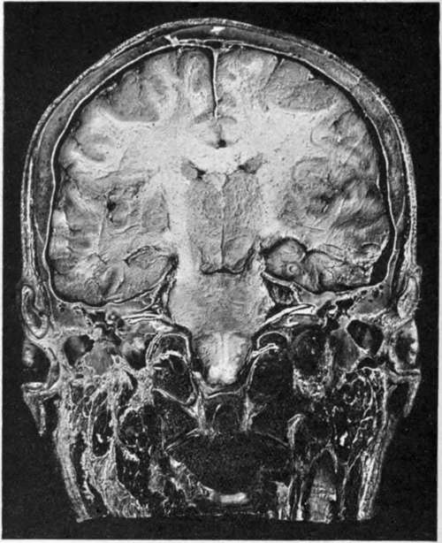

The Cranial Nerves. Continued
Description
This section is from the book "Surgical Anatomy", by John A. C. MacEwen. Also available from Amazon: Surgical Anatomy.
The Cranial Nerves. Continued
The supra-orbital foramen is situated at the junction of the inner and middle thirds of the supra-orbital margin, and a line drawn from that point to the interval between the bicusp teeth of both jaws (Holden's line) passes through the infra-orbital foramen, and, if prolonged, through the mental foramen.
The supra-orbital nerve is reached by a small horizontal incision just above the orbital margin, with its centre on the line. The infra-orbital nerve is reached by a similar incision fully ¼ inch below the lower margin of the orbit, with its centre on the line, the orbicularis and levator labii superioris being cut through. The mental nerve is reached likewise by a similar incision, with its centre on the line midway between the upper and lower margins of the lower jaw. The depressor anguli oris and labii inferioris are cut, and the nerve exposed and treated either by stretching or by cutting. The lingual nerve may lie reached by an incision through the mucous membrane a little below and behind the last molar tooth. The inferior dental nerve is reached through a vertical incision in the mucous membrane of the mouth, above and in front of the internal pterygoid, the muco-periosteum being shelled, and the nerve caught as it enters the dental foramen. It may also be treated through an external incision, the ascending ramus being trephined.
The sixth nerve arises from the floor of the fourth ventricle, and emerges between the anterior pyramid and pons. It lies to the inner side of the cavernous sinus, but otherwise has a course similar to the third. Its action is discussed under the Eye.
The seventh, or facial, nerve arises with the sixth from the floor of the fourth ventricle, and emerges between the olive and restiform body. It enters the internal auditory meatus with, but above, the auditory nerve, traverses the Fallopian aqueduct, and emerges at the stylo-mastoid foramen, whence it passes through the parotid gland and forms the pes anserinus.
A partial decussation of the facial nerve occurs in the pons at the level of the apparent origin of the fifth nerve. If a unilateral lesion occur in the pons anterior to this position, the face will be paralyzed on the same side as the rest of the body, a complete hemiplegia resulting on the side opposite to that of the lesion. If, on the other hand, the lesion be below the level of this crossing, the face will be paralyzed on the same side as the lesion, whereas the paralysis of the rest of the body will still be on the opposite side (the decussation of the pyramids occurring lower down, in the medulla).
In the petrous portion it gives off the great petrosal, which runs to Meckel's ganglion through the vidian, and also the chorda tympani, which leaves the tympanic cavity through the Glaserian fissure to supply the transverse lingual muscle, and ultimately joins the gustatory, to which it probably conveys taste fibres. Owing to the chorda supplying the transverse iingualis. which protrudes the tongue on its own side, a patient with facial paralysis protrudes the tongue toward the affected side.
The facial nerve supplies the muscles of the face, and also the buccinator. When the trunk is paralyzed, the paralysis of one side of the face is absolute : the patient cannot close the eye, the cornea accordingly becoming affected ; the tears drop on to the cheek ; the mouth is drawn to the affected side ; and saliva dribbles from the affected corner. Food lodges in the cheek from paralysis of the buccinator, and the patient cannot whistle.
A peripheral lesion of the nerve may also arise from cold (Bell's paralysis).
Where the centre is affected the paralysis is generally not absolute, the mimetic play of the features being maintained.
The nerve may be reached through an incision 1½ inches long, from the anterior margin of the mastoid process, at the level of the external auditory meatus, to a point just behind the angle of the lower jaw. The sterno-mastoid is drawn backwards, and the parotid gland pulled forwards, the posterior belly of the digastric pulled downwards, and the nerve exposed at the upper part of the wound and stretched. The operation may be done for facial spasm. In some cases of facial paralysis, due to destruction of part of the nerve, the peripheral portion has been united to the spinal accessory, the result, however, not being altogether fortunate, even when successful so far as restoration of motor function is concerned, as the face muscles must then work in conjunction with those supplied by the spinal accessory.
The eighth, or auditory, nerve arises in the floor of the fourth ventricle, and emerges between the olive and restiform body, to pass to the internal auditory meatus below the facial. It supplies the auditory apparatus.
The ninth, or glosso-pharyngeal, nerve arises in the fourth ventricle, emerges between olive and restiform body, and leaves the skull by the jugular foramen to supply sensation to the pharynx, and the posterior part of the tongue with taste. It gives branches to the stylo-pharyngeus and tonsil.
The tenth, vagus, or pneumogastric, arises and emerges like the ninth, and also leaves the skull through the jugular foramen, giving off the auricular or Arnold's nerve as it does so, which passes through the petrous and supplies the skin behind -the pinna and the lining of the auditory meatus. Moistening the skin of this region with water is supposed to convey stimulus to the pneumogastric, which would urge it to renewed exertion after a heavy dinner. Foreign bodies in the ear frequently cause uncontrollable cough from irritation conveyed along Arnold's nerve to the superior laryngeal branch of the vagus. This laryngeal branch leaves the trunk after it has been joined by the accessory portion of the spinal accessory, runs down and forwards beneath the internal carotid, to supply the crico-thyroid muscle and laryngeal mucous membrane. Irritation of the nerve causes spasm of the glottis.
The recurrent laryngeal branch passes round the first part of the subclavian on the right and the transverse aorta on
the left, ,and runs up to enter the lower and back part of the larynx, and supply all the muscles except the crico-thyroid.
Fig. 4.-Coronal head Section passing through Middle Ear.
Above, the superior longitudinal sinus and falx cerebri are seen.
Note in the brain the corpus callosum, the anterior horns of the lateral ventricles, and uptic thalami.
The temporo-sphenoidal lobes are shown resting on the thin tegmen tympani. The attic of the tympanum is well shown, as likewise the tympanum occupied by part of the ossicles and a portion of the external auditory meatus.
Note in particular the entrance of the seventh and eighth nerves into the internal ear.
Pressure on the nerve causes cough. Pressure on both nerves causes complete loss of voice, but no shortness of breath.
The vagus nerves supply the lungs, heart, and the stomach, and communicate with the great sympathetic plexuses. Irritation of the terminal filaments supplying the stomach frequently cause " stomach cough."
The spinal accessory, or eleventh nerve, consists of an accessory part, which arises like the vagus and ultimatel}-blends with it, and a spinal part, which arises from the anterior cornu of the cord, and ascends to enter the skull by the foramen magnum, and leave it again with the vagus. It passes down and backwards through the sterno-mastoid, which it supplies in part, and ends in the trapezius.
The nerve is associated with phonation, the accessory portion supplying the motor filaments in the vagus, while the spinal part controls the muscles mentioned. Stretching or cutting of the nerve may be necessitated in spasmodic torticollis. An incision 2½ inches long is made from the apex of the mastoid process, along the anterior border of the sterno-mastoid. The anterior border of the muscle is defined and turned up, and the nerve treated as it reaches the muscle on its under surface. The transverse process of the atlas forms a useful guide to the nerve.
The twelfth, or hypoglossal, nerve arises from the floor of the fourth ventricle, and emerges between the anterior pyramid and olive. Leaving the skull through the anterior condylar foramen, it descends with the vagus to the level of the angle of the jaw, and then passes forwards, over the carotid vessels and hyo-glossus muscle, to pass beneath the posterior tendon of the digastric and the mylo-hyoid, and end in the genio-hyo glossus. It supplies the extrinsic muscles of the tongue, and gives off a descending branch to supply the depressors of the hyoid bone.
In paralysis of the nerve the tongue, on protrusion, turns to the affected side.
Bulbar paralysis, also known as Duchenne's paralysis, or labio-glosso-pharyngeal paralysis, consists of disease of the medulla affecting the origins of the seventh, ninth, tenth, eleventh, and twelfth nerves, and is a very serious affection. Speech is affected, the lips and tongue are paretic, mastication and swallowing are difficult or impossible, and the face is also paretic.
Continue to:
- prev: The Cranial Nerves
- Table of Contents
- next: The Ear